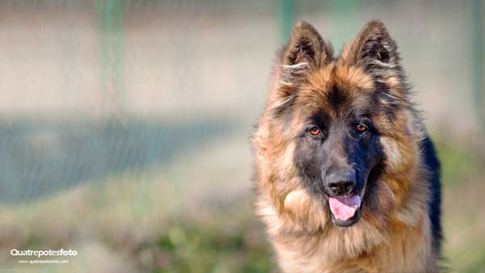
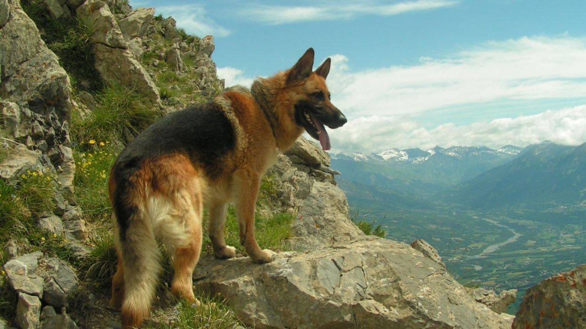

Tamaño: Grande
Altura Machos: Hasta 66 cm; Hembras: Hasta 60 cm
Peso: Machos: Hasta 40 kg ; Hembras: Hasta 31 kg
Pelo: Corto
Color: Negro, marrón
Energía: Media
Fuertes: Agilidad, pastoreo, obediencia y rally
Esperanza de vida: 7 a 10 años
Temperamento: El perro Pastor Alemán es confiado, valiente e inteligente.
El pastor alemán es un compañero de familia cariñoso, leal y amable que ama a los niños. Les encanta complacer y son fáciles de entrenar, por lo que a menudo se utilizan como perros policía, perros de servicio, perros de agilidad, perros de obediencia y perros centinela.
Como una raza fuerte y poderosa, es importante socializar a los cachorros con los niños para asegurarse de que sean buenos miembros de la familia. Como raza activa, el pastor alemán requiere ejercicio físico y mental. Suele ser adecuado para actividades como la agilidad, el pastoreo, el seguimiento y el buceo.
|  |  |
|---|